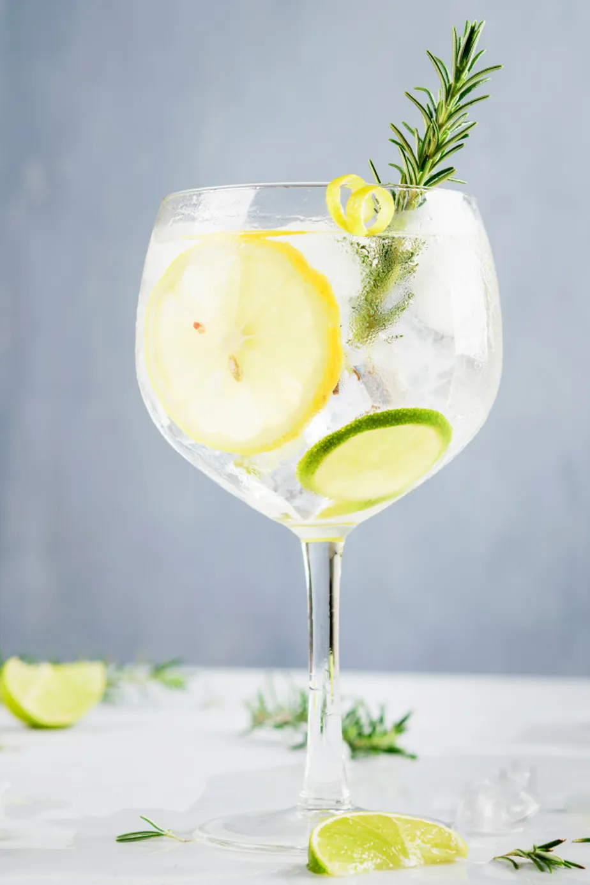
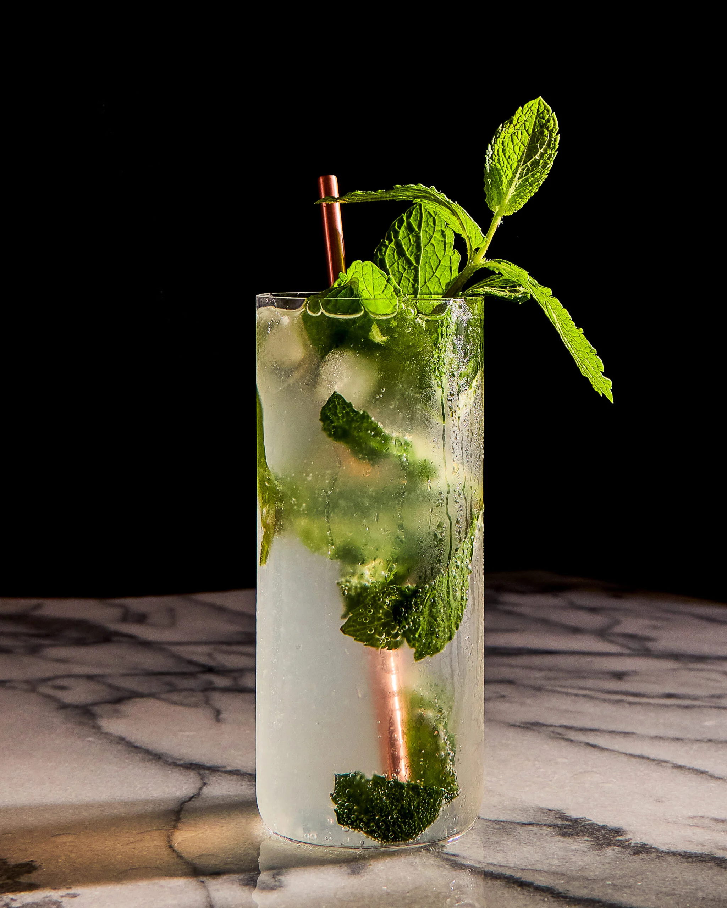

Gin Tônica
O gin tônica surgiu no século XIX. Originalmente, o gin era usado para fins medicinais. O tônico, com quinina, ajudava a combater a malária. Soldados britânicos na Índia começaram a misturar gin com tônico para tornar o remédio mais palatável. Com o tempo, a bebida se popularizou entre os civis. Hoje, é um dos coquetéis mais consumidos no mundo.

Moscow Mule
O Moscow Mule é um coquetel que ganhou popularidade na década de 1940 nos Estados Unidos. Sua base é o vodka, misturado com gengibre e suco de limão, e é servido tradicionalmente em uma caneca de cobre. A história do drink está ligada à combinação de dois produtos: o vodka russo e a cerveja de gengibre, um dos produtos mais consumidos nos EUA na época. O Moscow Mule se tornou um símbolo de inovação no mundo dos coquetéis e é apreciado até hoje pela sua combinação refrescante e picante.

Piña Colada
A Piña Colada é um coquetel tropical originado em Porto Rico na década de 1950. Sua receita clássica combina rum, creme de coco e suco de abacaxi, criando um sabor doce e refrescante. Acredita-se que tenha sido criada por Ramón "Monchito" Marrero, bartender do Caribe Hilton, que buscava um drink que capturasse a essência da ilha. Em 1978, foi reconhecida como a bebida oficial de Porto Rico. Hoje, a Piña Colada é apreciada mundialmente e simboliza o espírito praiano e a descontração das regiões tropicais.

Mojito
O Mojito é um clássico cubano que remonta ao século XVI, quando os indígenas já usavam a mistura de folhas de hortelã, rum, açúcar e limão. A versão moderna do coquetel ganhou fama em Havana, nos anos 1930, especialmente com a preferência de figuras históricas como Ernest Hemingway. O Mojito é caracterizado pela frescor da hortelã, o toque cítrico do limão e o rum branco, criando uma bebida refrescante e equilibrada. É um dos coquetéis mais amados, especialmente em climas quentes.
Sobre Nós
Drink Fast, o seu guia definitivo para a preparação dos melhores coquetéis clássicos. Nosso objetivo é oferecer um espaço dedicado aos apreciadores da coquetelaria, fornecendo receitas detalhadas e instruções passo a passo para a criação de drinks icônicos, como Gin Tônica, Moscow Mule, Piña Colada e Mojito. Acreditamos que a arte da mixologia deve ser acessível a todos, desde iniciantes até entusiastas experientes. Por isso, disponibilizamos informações claras e precisas para que você possa preparar seus drinks favoritos com facilidade e perfeição. Além disso, buscamos compartilhar curiosidades e histórias por trás de cada bebida, proporcionando uma experiência enriquecedora para nossos visitantes. No Drink Fast, cada receita é uma oportunidade para explorar novos sabores e aprimorar suas habilidades na coquetelaria. Nosso compromisso é tornar a criação de drinks uma experiência simples, prática e prazerosa. Brinde com a gente e descubra o prazer de preparar o seu próprio coquetel!